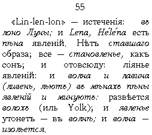
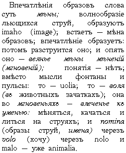
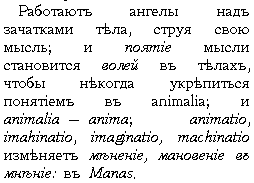
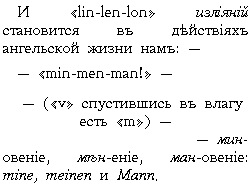

Glossolalia (Section 55)
GLOSSOLALIA

"Lin-len-lon" are -- are overflows: into Luna's lap; and Lena, Helena is the foam [pena] of eventualities. There is no image which has become; everything is -- becoming, like a dream; and from everywhere there is: a flow of eventualities: and the swell and lava [lavina] (downflow, flow [liven', l'yut]) meander by in the mingles of the foam of eventualities: a Wallachian (or Volk) waves about; and the eventuality drowns -- in the swell; and the swell -- overflows.

Impressions of images of the word are mingles; the free-formation of spilling streams, they give form to the imago (image); there stands up -- a mingle of images; an impression forms: then it streams apart; and again it is -- a wafting of mingles of minglings (of moments); there is no -- comprehension; instead of a thought there are fountains and pulses: that is -- uolia; that is -- free-will (in animal embryos); free will is in the moments -- an inclination to involvement: to be mingled, to rock and flow in streams; and nomina (images of streams, names) through volo (I wish) through nolo and malo are -- already animalia

Angels labor over the embryos of the body, streaming their thought; and the perception of thought becomes will in the bodies, so as to someday be confirmed/cosolidated as comprehension in animalia; and animalia -- anima; animatio, imahinatio, imaginatio, machinatio, mangle mangling, mangling into the mental: into Manas.

And "lin-len-lon" of overflows become for us in the activities of angelical life: --
-- "min-men-man" --
-- ("v" having descended into the moisture is "m") --
--meandering, ming-ling, man-gling: mine, meinen and Mann.